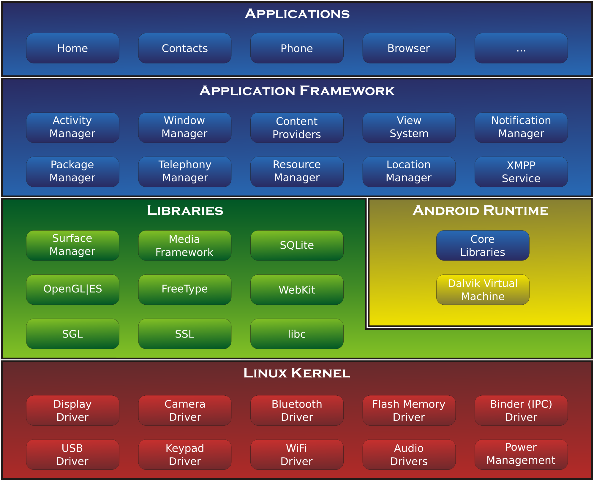

Android is a mobile operating system (OS) currently developed by Google, based on the Linux kernel and designed primarily for touchscreen mobile devices such as smartphones and tablets. Android's user interface is mainly based on direct manipulation, using touch gestures that loosely correspond to real-world actions, such as swiping, tapping and pinching, to manipulate on-screen objects, along with a virtual keyboard for text input. In addition to touchscreen devices, Google has further developed Android TV for televisions, Android Auto for cars, and Android Wear for wrist watches, each with a specialized user interface. Variants of Android are also used on notebooks, game consoles, digital cameras, and other electronics. Android has the largest installed base of all operating systems of any kind. Android has been the best selling OS on tablets since 2013, and on smartphones it is dominant by any metric.
| Code name | Version number | Initial release date | API level |
|---|---|---|---|
| 1.0 | September 23, 2008 | 1 | |
| 1.1 | February 9, 2009 | 2 | |
| Cupcake | 1.5 | April 27, 2009 | 3 |
| Donut | 1.6 | September 15, 2009 | 4 |
| Eclair | 2.0–2.1 | October 26, 2009 | 5–7 |
| Froyo | 2.2–2.2.3 | May 20, 2010 | 8 |
| Gingerbread | 2.3–2.3.7 | December 6, 2010 | 9–10 |
| Honeycomb | 3.0–3.2.6 | February 22, 2011 | 11–13 |
| Ice Cream Sandwich | 4.0–4.0.4 | October 18, 2011 | 14–15 |
| Jelly Bean | 4.1–4.3.1 | July 9, 2012 | 16–18 |
| KitKat | 4.4–4.4.4, 4.4W–4.4W.2 | October 31, 2013 | 19–20 |
| Lollipop | 5.0–5.1.1 | November 12, 2014 | 21–22 |
| Marshmallow | 6.0–6.0.1 | October 5, 2015 | 23 |
| N | Developer Preview 2 |

Android's kernel is based on one of the Linux kernel's long-term support (LTS) branches. Since April 2014, Android devices mainly use versions 3.4 or 3.10 of the Linux kernel.The specific kernel version depends on the actual Android device and its hardware platform;Android has used various kernel versions since the version 2.6.25 that was used in Android 1.0. Android's variant of the Linux kernel has further architectural changes that are implemented by Google outside the typical Linux kernel development cycle, such as the inclusion of components like Binder, ashmem, pmem, logger, wakelocks, and different out-of-memory (OOM) handling. Certain features that Google contributed back to the Linux kernel, notably a power management feature called "wakelocks", were rejected by mainline kernel developers partly because they felt that Google did not show any intent to maintain its own code. Google announced in April 2010 that they would hire two employees to work with the Linux kernel community, but Greg Kroah-Hartman, the current Linux kernel maintainer for the stable branch, said in December 2010 that he was concerned that Google was no longer trying to get their code changes included in mainstream Linux. Some Google Android developers hinted that "the Android team was getting fed up with the process," because they were a small team and had more urgent work to do on Android.
Android is architected in the form of a software stack comprising applications, an operating system, run-time environment, middleware, services and libraries. This architecture can, perhaps, best be represented visually as outlined in Figure 6-1. Each layer of the stack, and the corresponding elements within each layer, are tightly integrated and carefully tuned to provide the optimal application development and execution environment for mobile devices.
Android is developed in private by Google until the latest changes and updates are ready to be released, at which point the source code is made available publicly. This source code will only run without modification on select devices, usually the Nexus series of devices. The source code is, in turn, adapted by OEMs to run on their hardware. Android's source code does not contain the often proprietary device drivers that are needed for certain hardware components. In 2007, the green Android logo was designed for Google by graphic designer Irina Blok. The design team was tasked with a project to create a universally identifiable icon with the specific inclusion of a robot in the final design. After numerous design developments based on science-fiction and space movies, the team eventually sought inspiration from the human symbol on restroom doors and modified the figure into a robot shape. As Android is open-sourced, it was agreed that the logo should be likewise, and since its launch the green logo has been reinterpreted into countless variations on the original design.
Android is built on top of Linux, and a large portion of it is written in C. There are swaths of code written in C++ though. Also, most of the application framework (the stuff you would call android, and almost everything you see on screen) is written in Java.
The origin of C is closely tied to the development of the Unix operating system, originally implemented in assembly language on a PDP-7 by Ritchie and Thompson, incorporating several ideas from colleagues. Eventually, they decided to port the operating system to a PDP-11. The original PDP-11 version of Unix was developed in assembly language. The developers were considering rewriting the system using the B language, Thompson's simplified version of BCPL. However B's inability to take advantage of some of the PDP-11's features, notably byte addressability, led to C. The development of C started in 1972 on the PDP-11 Unix system[10] and first appeared in Version 2 Unix. The language was not initially designed with portability in mind, but soon ran on different platforms as well : a compiler for the Honeywell 6000 was written within the first year of C's history, while an IBM System/370 port followed soon. The name of C simply continued the alphabetic order started by B.[12] Also in 1972, a large part of Unix was rewritten in C.[13] By 1973, with the addition of struct types, the C language had become powerful enough that most of the Unix's kernel was now in C. Unix was one of the first operating system kernels implemented in a language other than assembly. (Earlier instances include the Multics system (written in PL/I), and MCP (Master Control Program) for the Burroughs B5000 written in ALGOL in 1961.) Circa 1977, Ritchie and Stephen C. Johnson made further changes to the language to facilitate portability of the Unix operating system. Johnson's Portable C Compiler served as the basis for several implementations of C on new platforms.
The C programming language uses libraries as its primary method of extension. In C, a library is a set of functions contained within a single "archive" file. Each library typically has a header file, which contains the prototypes of the functions contained within the library that may be used by a program, and declarations of special data types and macro symbols used with these functions. In order for a program to use a library, it must include the library's header file, and the library must be linked with the program, which in many cases requires compiler flags (e.g., -lm, shorthand for "math library"). The most common C library is the C standard library, which is specified by the ISO and ANSI C standards and comes with every C implementation. (Implementations which target limited environments such as embedded systems may provide only a subset of the standard library.) This library supports stream input and output, memory allocation, mathematics, character strings , and time values. Several separate standard headers (for example, stdio.h) specify the interfaces for these and other standard library facilities. Another common set of C library functions are those used by applications specifically targeted for Unix and Unix-like systems, especially functions which provide an interface to the kernel. These functions are detailed in various standards such as POSIX and the Single UNIX Specification. Since many programs have been written in C, there are a wide variety of other libraries available. Libraries are often written in C because C compilers generate efficient object code; programmers then create interfaces to the library so that the routines can be used from higher-level languages like Java, Perl, and Python.
Although mimicked by many languages because of its widespread familiarity, C's syntax has often been criticized.
For example, Kernighan and Ritchie say in the Introduction of The C Programming Language, "C, like any other language,
has its blemishes. Some of the operators have the wrong precedence; some parts of the syntax could be better."
Some specific problems worth noting are:
Not checking number and types of arguments prior to C99 when the function declaration has an empty parameter list.
[This provides backward compatibility with K&R C, which lacked prototypes.]
Some questionable choices of operator precedence, as mentioned by Kernighan and Ritchie above, such as ==
binding more tightly than & and | in expressions like x & 1 == 0, which would need to be written [x & 1] == 0 to be properly evaluated.
The use of the = operator, used in mathematics for equality, to indicate assignment, following the precedent of Fortran and PL/I
, but unlike ALGOL and its derivatives. Ritchie made this syntax design decision consciously, based primarily on the argument that assignment occurs more often than comparison.
Similarity of the assignment and equality operators [= and ==], making it easy to accidentally substitute one for the other.
In many cases, each may be used in the context of the other without a compilation error (although some compilers produce warnings).
For example, the conditional expression in if [a=b] is true if a is not zero after the assignment.
A lack of infix operators for complex objects, particularly for string operations, making programs which rely heavily on these operations
[implemented as functions instead] somewhat difficult to read.
A declaration syntax that some find unintuitive, particularly for function pointers. [Ritchie's idea was to declare identifiers in contexts
resembling their use: "declaration reflects use".]
C's method of terminating strings with a NUL has been said by some to have created extra programming costs because it imposes extra compiler,
performance and security costs.
In 1979, Bjarne Stroustrup, a Danish computer scientist, began work on the predecessor to C++, "C with Classes". The motivation for creating a new language originated from Stroustrup's experience in programming for his Ph.D. thesis. Stroustrup found that Simula had features that were very helpful for large software development, but the language was too slow for practical use, while BCPL was fast but too low-level to be suitable for large software development. When Stroustrup started working in AT&T Bell Labs, he had the problem of analyzing the UNIX kernel with respect to distributed computing. Remembering his Ph.D. experience, Stroustrup set out to enhance the C language with Simula-like features. C was chosen because it was general-purpose, fast, portable and widely used. As well as C and Simula's influences, other languages also influenced C++, including ALGOL 68, Ada, CLU and ML. Initially, Stroustrup's "C with Classes" added features to the C compiler, Cpre, including classes, derived classes, strong typing, inlining and default arguments.[9] In 1983, C with Classes was renamed to C++ ("++" being the increment operator in C), adding new features that included virtual functions, function name and operator overloading, references, constants, type-safe free-store memory allocation (new/delete), improved type checking, and BCPL style single-line comments with two forward slashes (//). Furthermore, it included the development of a standalone compiler for C++, Cfront. In 1985, the first edition of The C++ Programming Language was released, which became the definitive reference for the language, as there was not yet an official standard. The first commercial implementation of C++ was released in October of the same year. In 1989, C++ 2.0 was released, followed by the updated second edition of The C++ Programming Language in 1991. New features in 2.0 included multiple inheritance, abstract classes, static member functions, const member functions, and protected members. In 1990, The Annotated C++ Reference Manual was published. This work became the basis for the future standard. Later feature additions included templates, exceptions, namespaces, new casts, and a boolean type. After the 2.0 update, C++ evolved relatively slowly until, in 2011, the C++11 standard was released, adding numerous new features, enlarging the standard library further, and providing more facilities to C++ programmers. After a minor C++14 update, released in December 2014, various new additions are planned for 2017.
The C++ language has two main components: a direct mapping of hardware features provided primarily by the C subset, and zero-overhead abstractions based on those mappings. Stroustrup describes C++ as "a light-weight abstraction programming language [designed] for building and using efficient and elegant abstractions";and "offering both hardware access and abstraction is the basis of C++. Doing it efficiently is what distinguishes it from other languages".
The C++ standard consists of two parts: the core language and the standard library. C++ programmers expect the latter on every major implementation of C++; it includes vectors, lists, maps, algorithms (find, for_each, binary_search, random_shuffle, etc.), sets, queues, stacks, arrays, tuples, input/output facilities (iostream, for reading from and writing to the console and files), smart pointers for automatic memory management, regular expression support, multi-threading library, atomics support (allowing a variable to be read or written to by at most one thread at a time without any external synchronisation), time utilities (measurement, getting current time, etc.), a system for converting error reporting that doesn't use C++ exceptions into C++ exceptions, a random number generator and a slightly modified version of the C standard library (to make it comply with the C++ type system). A large part of the C++ library is based on the Standard Template Library (STL). Useful tools provided by the STL include containers as the collections of objects (such as vectors and lists), iterators that provide array-like access to containers, and algorithms that perform operations such as searching and sorting. Furthermore, (multi)maps (associative arrays) and (multi)sets are provided, all of which export compatible interfaces. Therefore, using templates it is possible to write generic algorithms that work with any container or on any sequence defined by iterators. As in C, the features of the library are accessed by using the #include directive to include a standard header. C++ provides 105 standard headers, of which 27 are deprecated. The standard incorporates the STL that was originally designed by Alexander Stepanov, who experimented with generic algorithms and containers for many years. When he started with C++, he finally found a language where it was possible to create generic algorithms (e.g., STL sort) that perform even better than, for example, the C standard library qsort, thanks to C++ features like using inlining and compile-time binding instead of function pointers. The standard does not refer to it as "STL", as it is merely a part of the standard library, but the term is still widely used to distinguish it from the rest of the standard library (input/output streams, internationalization, diagnostics, the C library subset, etc.) Most C++ compilers, and all major ones, provide a standards conforming implementation of the C++ standard library.
Despite its widespread adoption, many programmers have criticized the C++ language, including Linus Torvalds, Richard Stallman, and Ken Thompson.Issues include a lack of reflection or garbage collection, slow compilation times, and verbose error messages , particularly from template metaprogramming. Because C++ introduces an additional memory footprint on programs due to internally generated vtables and constructors,[citation needed] programmers such as Torvalds prefer C over C++ for low-level, performance-critical and portable system software. To avoid the problems that exist in C++, and to increase productivity,some people suggest alternative languages newer than C++, such as D, Go, Rust and Vala.
James Gosling, Mike Sheridan, and Patrick Naughton initiated the Java language project in June 1991. Java was originally designed for interactive television, but it was too advanced for the digital cable television industry at the time. The language was initially called Oak after an oak tree that stood outside Gosling's office. Later the project went by the name Green and was finally renamed Java, from Java coffee. Gosling designed Java with a C/C++-style syntax that system and application programmers would find familiar. Sun Microsystems released the first public implementation as Java 1.0 in 1995. It promised "Write Once, Run Anywhere" (WORA), providing no-cost run-times on popular platforms. Fairly secure and featuring configurable security, it allowed network- and file-access restrictions. Major web browsers soon incorporated the ability to run Java applets within web pages, and Java quickly became popular, while mostly outside of browsers, that wasn't the original plan. In January 2016, Oracle announced that Java runtime environments based on JDK 9 will discontinue the browser plugin. The Java 1.0 compiler was re-written in Java by Arthur van Hoff to comply strictly with the Java 1.0 language specification. With the advent of Java 2 (released initially as J2SE 1.2 in December 1998 – 1999), new versions had multiple configurations built for different types of platforms. J2EE included technologies and APIs for enterprise applications typically run in server environments, while J2ME featured APIs optimized for mobile applications. The desktop version was renamed J2SE. In 2006, for marketing purposes, Sun renamed new J2 versions as Java EE, Java ME, and Java SE, respectively. On November 13, 2006, Sun released much of its Java virtual machine (JVM) as free and open-source software, (FOSS), under the terms of the GNU General Public License (GPL). On May 8, 2007, Sun finished the process, making all of its JVM's core code available under free software/open-source distribution terms, aside from a small portion of code to which Sun did not hold the copyright.
Java is a general-purpose computer programming language that is concurrent, class-based, object-oriented, and specifically designed to have as few implementation dependencies as possible. It is intended to let application developers "write once, run anywhere" (WORA), meaning that compiled Java code can run on all platforms that support Java without the need for recompilation. Java applications are typically compiled to bytecode that can run on any Java virtual machine (JVM) regardless of computer architecture. As of 2016, Java is one of the most popular programming languages in use, particularly for client-server web applications, with a reported 9 million developers.[citation needed] Java was originally developed by James Gosling at Sun Microsystems (which has since been acquired by Oracle Corporation) and released in 1995 as a core component of Sun Microsystems' Java platform. The language derives much of its syntax from C and C++, but it has fewer low-level facilities than either of them.
The Java Class Library is the standard library, developed to support application development in Java. It is controlled by Sun Microsystems in cooperation with others through the Java Community Process program. Companies or individuals participating in this process can influence the design and development of the APIs. This process has been a subject of controversy
Criticisms directed at Java include the implementation of generics, speed, the handling of unsigned numbers, the implementation of floating-point arithmetic, and a history of security vulnerabilities in the primary Java VM implementation HotSpot.